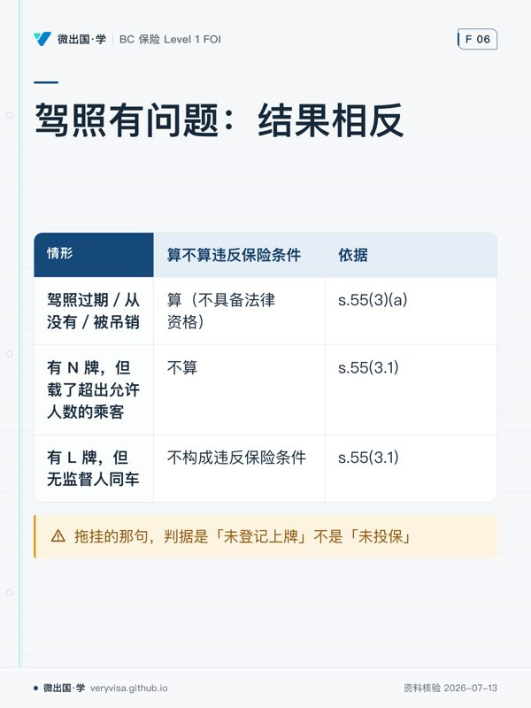

前面三篇讲的是保障本身——赔什么、赔多少、保费怎么算。这一篇讲的是保障的边界： 车什么时候才算合法上路，什么情况下 ICBC 可以一分不赔还回头找你要钱， 以及那些不长在 Basic／Optional 这条主干上的产品。
这三块在增补册里分散在四个地方（Licensing and Insurance、Vehicle Inspections、 Specialized Coverages、Coverage Conditions），但它们回答的是同一个问题： 这张保单在什么条件下成立。
一、先讲最贵的那一块：违反条件会怎样
1.1 后果不是「拒赔」，是「拒赔 ＋ 追偿」
增补册那个 Andrew 的例子值得一字一句读：Andrew 送家具时撞了 Bert，两车共损失 $20,000， 而他的驾照三个月前过期了没续。结果是：
- ICBC 照赔 Bert 的伤和车——第三方拿得到钱
- ICBC 不赔 Andrew 自己的车
- ICBC 赔给 Bert 的那笔，要 Andrew 还回来
✕
这条制度设计的商业逻辑：受害人先拿到钱，代价转嫁给违约的那个人
强制险的存在理由是保护路上的其他人，不是保护投保人。所以违反条件时， 制度不会让第三方去承担你的过错，而是先赔后追。
落到客户对话上：「我保险还有效吧？」这个问题问错了。 有效的是对别人的那部分；对你自己的那部分已经没了，而且你还欠 ICBC 一笔。
⚠️
「先赔后追」只在这一节成立，别推广到普通车损（2026-08-20 核定）
回《Insurance (Vehicle) Act》Part 11 原文，普通两车事故的车损那一侧根本没有「追」：
- s.172(1)：公路上、涉及至少两辆本省在保车辆的事故，任何人对车辆损坏都没有诉权， 也不得提起或维持诉讼。你的车由自己的 Basic Vehicle Damage Coverage 赔（上限 $200,000）， 责任方承担的方式是保费与驾驶记录，不是被代位追偿。
- s.172(2) 留了例外：对方不是本省在保车辆的车主／承租人／乘员／驾驶人时，诉权仍在。
- s.172(3)：这类诉讼里排除 Negligence Act 的连带与相互分摊，各按各的责任比例。
- s.178 才是「追」，对象很窄：只针对未上牌车／非标准机动车／被排除车辆的 车主、驾驶人或乘员，且按责任百分比追（s.178(3)）。
- s.177 是第三件事：ICBC 可减付或拒付 BVD——故意造成事故或车损、 明知而提供虚假信息、不配合法定要求。
一句能直接对客户说的话：「在 BC，两车对撞谁修谁的车已经不打官司了—— 你的车由你的保险修，谁有责体现在保费上。」 本节讲的「先赔后追」是违反条件的专属后果，不是 Enhanced Care 的通则。
1.2 增补册的清单（考试就考这一张）
违反条件包括：用途违反《Motor Vehicle Act》或其它法律 · 用途与保单申报不符 · 在省外停留超过法律允许的期限 · 无有效驾照驾驶 · 犯罪过程中驾驶 · 逃避警方行动或拘捕 · 参加竞速或速度测试 · 拖挂未投保的挂车 · 以车辆实施故意暴力行为（如路怒） · 酒精或药物影响下驾驶 · 拒绝呼气测试或路边测试。
1.3 但其中三项，法条口径和考试口径不一样
这一节是本篇最值钱的部分。三处都回了 BC 法条摘录 原文（Insurance (Vehicle) Regulation B.C. Reg. 447/83 Part 5，页面自述现行至 2026-07-28）。
① 酒后拒赔：法条根本没有「0.05」这个数
| 增补册怎么写 | s.55(8) 原文 | |
|---|---|---|
| 判据 | 「blowing more than 0.05 ... 50 mg/100 mL」 | incapable of proper control of the vehicle（能力判据，无任何数字） |
| 另一条通道 | 单列「拒绝呼气测试」即违反 | 须因该罪名被定罪（s.55(8)(b)，旧 Criminal Code s.254(5)、现 s.320.15） |
0.05 在 Part 5 全文里一次都没出现过。 它属于另一套制度—— 《Motor Vehicle Act》s.215.41 起的 Immediate Roadside Prohibition（路边即时禁驾）， 那是行政处罚（吊照、扣车、罚款），和「ICBC 赔不赔」是两条平行的轨道。
⚠️
「吹了 0.04，所以保险照赔」——这是把两套制度混成一套的典型错答
能力判据不需要任何数字。一个人吹 0.04 但明显无法正常控制车辆， s.55(8)(a) 照样成立；反过来吹了 0.06 而并未丧失控制能力，也不自动等于违反条件—— 但他会另外吃到路边即时禁驾。两条轨道各走各的，可能同时踩，也可能只踩一条。
增补册自己也写对过一次：Ida 那个方框案例的原话是 「driving while under the influence of alcohol to such an extent that she was incapable of properly controlling the vehicle」——用的正是法条口径。 正文清单与方框案例互相打架，而方框案例那句才对。
🔧
考场答哪个、柜台答哪个
考卷按增补册的清单答（含 0.05 那个括号）——卷子出自那本书。 客户问的时候按法条说：判的是有没有丧失控制能力、有没有被定罪，不是吹了多少。
② 「无有效驾照」有一条明文例外
s.55(3.1) 写得非常直白：仅仅因为违反了驾照上的限制条款 （MVA Regulations s.30.06(2)、30.07(1)(3)、30.071(1)、30.08(1)、30.10(2)(4)、30.11(1)—— 正是 L／N 新驾驶人阶段那一串限制），不构成违反保险条件。
| 情形 | 算不算违反保险条件 | 依据 |
|---|---|---|
| 驾照过期／从没有／被吊销 | 算（不具备法律资格） | s.55(3)(a)；增补册 Andrew 例 |
| 有 N 牌，但载了超出允许人数的乘客 | 不算 | s.55(3.1) |
| 有 L 牌，但无监督人同车 | 不算 | s.55(3.1) |
⚠️
没有驾照 ≠ 违反了驾照的限制条款
这两件事在日常语言里都叫「驾照有问题」，在法条里是完全相反的结果。 家长最常问的那个问题——「孩子 N 牌违规载人出了事，保险赔不赔」—— 答案是赔（交通法上的罚单另算）。答成「不赔」会让客户白白放弃一笔理赔。
③ 拖挂的那句，判据是「未登记上牌」不是「未投保」
增补册写「tow an uninsured trailer」；s.55(4) 的原文是 挂车required to be registered and licensed 而 is not so registered and licensed。 一个说保险，一个说牌照。实务里两者通常同时缺，但判据本身不是一回事。
二、上路之前：登记、检验，以及那个被讲错的 30 天
2.1 谁必须登记上牌买保险
BC 居民或机构拥有、并在公共道路上使用的机动车，一律必须通过 Autoplan Basic 登记、 上牌、投保。越野车（ORV，如雪地摩托、越野摩托、高尔夫球车、全地形车）按用途分三档：
| 用途 | 要求 |
|---|---|
| 只在允许的公共土地上跑 | 不必上牌投保，但必须登记并悬挂 ORV 标牌 |
| 上公共道路 | 必须上牌 ＋ 强制 Autoplan Basic |
| 只在林业道路（forest service road）上跑、不上公共道路 | 至少 $200,000 第三方责任险，可走 ICBC 的 Off-Highway TPL 或私营保险 |
商用车方面有一条时限差异：拟在 BC 道路上使用总重超过 5,000 公斤的商用车或商用挂车的， 必须立即登记上牌，没有缓冲期。
2.2 车辆检验
从省外运进 BC 的车辆，登记前必须通过机械与安全检验。 从加拿大境外运进的，还要同时符合联邦与省两级的检验要求。 指定检验中心的名单由 Autoplan 经纪掌握。
2.3 那个 30 天：增补册讲的和 s.21 原文不一样
增补册说：搬来 BC 定居的人，须在 30 天内登记车辆并购买强制保险，并点名了 MVA s.21。 回原文一看，s.21 是一条豁免条款，而且给了两档时限：
| 增补册 | s.21(1) 原文 | |
|---|---|---|
| 触发条件 | 「moving in to take up permanent residence」（居留意图） | 「for other than touring purposes」（用途） |
| 时限 | 只给了 30 天 | 旅游用途 6 个月／非旅游用途 30 天 |
| 起算 | 未明说 | 「began to operate … on a highway in British Columbia」 |
条文结构也是反的：s.21 不说「你必须在 30 天内登记」，而说 「满足这些条件时你被豁免于登记要求」——30 天是豁免的有效期，期满才回到一般义务。
⚠️
判一个客户要不要登记，问的是用途，不是他打算住多久
一个明确说「我只在 BC 自驾游四个月」的省外车主，走的是 s.21(1)(d) 的 6 个月那一档， 哪怕他人在 BC 已经超过 30 天。按「新住民 30 天」去答，会让这个客户白白登记上牌。
反过来，一个说「我还没决定长住」但天天开车去上班的人，用途已经不是 touring， 30 天就到期了——他的居留意图不改变这个结论。
🔧
考场答哪个、柜台答哪个
考卷答「新住民 30 天内登记并投保」。柜台按用途分档， 并提醒客户起算点是「开始在 BC 公路上驾驶那一天」，不是落地那天。
2.4 拒绝出单令（refuse-to-issue order）
因为每个 BC 车主每年都必须来买一次强制险，这个环节被政府当成了收欠款的卡点。 RoadSafetyBC、司法厅、交通厅等可以命令 ICBC 在欠款清偿前拒绝出单或续保。
会挂上拒绝出单令的情形：车辆相关欠款／罚款／违章（如交通罚单）· 扣车费用 （防止车主弃车）· 环保不合规（如老旧重型车未加装柴油氧化催化器）· 机械检验不合格 · 公交罚款 · 家庭赡养费执行计划（Family Maintenance Enforcement Program）欠款（即欠抚养费）。
多数情况下经纪可以代收这笔钱然后照常出单；有些情况下客户必须直接向政府缴清、 等指令从档案里撤销后再回来办。
ℹ️
这是柜台上最容易起冲突的一幕
客户来续保，系统弹出拒绝出单令，而欠的往往是一笔和车毫无关系的钱（比如抚养费）。 先分清「我能代收」还是「你得先去政府缴」——这决定了他今天能不能把车开走。
2.5 谁被保上了
Autoplan Basic 覆盖：车主或承租人 · 保单上列名的每一位驾驶人 · 任何持有效驾照且经车主／承租人同意驾驶该车的人。
一个重要排除：以买卖、修理、保养、存放、服务、代客泊车为业的个人或公司， 即使经车主同意，也不在车主的 Autoplan 保单覆盖范围内。 他们必须自购 garage policy（车行险）。
⚠️
「我同意他开」不足以让修车行被保上
一般人凭「车主同意」就受保，车行不行——判据不是有没有同意，是这个人是不是以此为业。 把车留在车行期间的责任，走的是车行自己的 garage policy。
地域范围：Autoplan Basic 只在加拿大、美国，以及往返加美港口的船上有效。 去墨西哥出事，ICBC 一分不赔。
三、不长在主干上的那些产品
3.1 专项险六种
| 产品 | 解决什么 | 关键判据 |
|---|---|---|
| 豪华车保障（Special Risk Own Damage） | 高价车修换成本高 | MSRP > $150,000 且车龄 ≤ 7 年；或 MSRP > $400,000 且车龄 ≤ 14 年。不含商用车、摩托车、挂车、休旅车 |
| Storage Policy（存放险） | 闲置不用的车 | 不在公路、私路、私有地上行驶，且不停在公路上。登记与未登记车辆都可以 |
| APV38 临时保障 | 省外新购车开回 BC 登记的路上 | 1–31 天，见下 |
| Unlicensed Farm Tractor Certificate | 农机上公路 | 给依 MVA 无须上牌的农用车；证书必须随车携带 |
| Collector-Vehicle（收藏车） | 低保费费率类别 | 满 25 年且被 ICBC 认可有收藏价值，或满 15 年且为限量／停产车型；且保养或复原到原厂规格；且仅供娱乐用途 |
| Vintage Motor Vehicle Certificate（古董车） | 更窄的一档 | 满 30 年 ＋ 尽可能保持原状 ＋ 属收藏品 ＋ 机械状况良好 ＋ 挂 vintage 牌照 |
古董车的用途是白名单，不在名单上的一律不许开：指定检验场所 · 修理或保养场所 · 游行或展览（含为其载货） · 俱乐部活动或类似活动 · 婚礼或毕业典礼 · 公共活动（如道路桥梁通车、街道或建筑落成）。除此之外任何用途都不允许。 若车辆不符合 MVA Regulations 关于灯光等安全项的规定，只能在白天行驶；符合则不限时段。
⚠️
收藏车与古董车不是同一档，别混
收藏车（25／15 年）是费率类别，仅供娱乐用途，但没有那张白名单； 古董车（30 年）是另一张证书，用途按白名单逐项列举，且可能被限制在白天。 卷子最爱在「年限」和「用途限制」这两栏之间交叉换位。
3.2 APV38：这个 binder 和第 2 章那个不是一回事
增补册自己点了这件事：「As you'll recall from Chapter 2, an insurance binder puts coverage in place while an application is being processed. ICBC uses the term binder in a different way, however.」
| FOI ch02 的 binder | ICBC 的 APV38 | |
|---|---|---|
| 是什么 | 保单正式签发前把保障先绑上的临时合同，与其它保险合同受同样条款约束 | Binder for Owner's Interim Certificate of Insurance |
| 适用情形 | 任何险种，投保申请处理期间 | 仅限：BC 居民／BC 注册机构在省外（加拿大境内或美国本土）新购的车，开回 BC 办登记的路上 |
| 期限 | 到保单签发为止 | 1–31 天 |
| 保费怎么定 | — | 申报车值 ＋ 所选保障限额与免赔 ＋ 天数 |
⚠️
情境题给「客户的保单还在处理中」，正确答案不是 APV38
这是一词两义的标准考法。APV38 的触发条件极窄，缺了「省外新购」「开回 BC 登记」 任何一条都用不上它。
还有一句必须转达客户：APV38 保的是车，不等于允许这辆车在省外公共道路上行驶—— 有些地区另需许可。经纪应提示客户自行向沿途各地车管机构核实。
3.3 RoadStar 套餐
面向特定费率类别的轿车、房车、轻型商用车，加保费后打包四项： 增强的使用损失保障 · 租车保障 · 车辆旅行保障 · 锁具钥匙与遥控钥匙保障。
ℹ️
非 BC 居民不能买 RoadStar 里的租车保障与车辆旅行保障
这一项限制很容易被跳过，但它正是「谁有资格买」这类题的出题点。
- 租车保障：连续 30 天以内，提供第三方责任、UMP、使用损失、 碰撞与综合（各带免赔额），并赔付租车公司因车损产生的租金损失索赔。 有 RoadStar 的客户不需要再买租车行柜台推销的那份车损险。 不符合资格或不想买套餐的，ICBC 另有单独的租车保单。
- 车辆旅行保障：出门在外（度假／出差）车被偷时的费用，覆盖不超过 30 天的行程， 含额外生活费、拖车费、把车运回家、租替代车、回家的交通费， 以及对方全责且非 ICBC 承保时的碰撞免赔额返还。
ℹ️
RoadStar 里的一堆金额，增补册明说不考****
增补册在这几节反复写着「These dollar amounts will not be asked about on your exam」。
本站的题库有一道机器判据（gates/question_lint.py 的 non-testable）专门拦
拿这些金额出题的做法。背它们是纯浪费，去 icbc.com 查当期值即可。
⚠️ 但要和 分清：商用车第三方责任 $1,000,000／危险品 $2,000,000 出现在别的小节，不在任何「不考」块内，是正经考点。 同一个 $1,000,000 出现在 RoadStar 租车保障里就不考——看它长在哪一节，不看数字本身。
术语对照
| 中文 | English | 记忆锚 |
|---|---|---|
| 保障条件（违反即拒赔） | coverage conditions / breach of conditions | 「条件」不是「除外」——除外是本来就不保，违反条件是本来保、被你弄没了 |
| 拒绝出单令 | refuse-to-issue order | 买强制险这一步被当成政府收欠款的卡点 |
| 车行险 | garage policy | 以修车／卖车／泊车为业的人，不吃车主的保单 |
| 临时保障证书 | Binder for Owner's Interim Certificate of Insurance (APV38) | 省外新购 ＋ 开回登记 ＋ 1–31 天 |
| 收藏车 / 古董车 | collector vehicle / vintage motor vehicle | 25（或 15）年 vs 30 年；后者用途是白名单 |
| 农用机具 | implements of husbandry | 证书随车携带 |
| 路边即时禁驾 | Immediate Roadside Prohibition (IRP) | 0.05 属于这里，不属于保险条件 |
| 越野车 | off-road vehicle (ORV) | 公共土地要登记、公共道路要上牌投保、林道要 $200,000 TPL |
自查四问
- 客户酒后出事，他问「我吹了 0.04，保险赔吧？」——你按哪个判据回答，为什么这个问题问错了？
- N 牌的孩子违规载人撞了车，保障还在不在？依据是哪一条，和「驾照过期」差在哪？
- 一个省外车主说要在 BC 自驾游四个月，他 30 天内必须登记吗？你先问他什么？
- 客户的保单还在处理中，他想先把车开走——APV38 用得上吗？为什么？
本页知识卡
不看正文也能拿到这一节的核心内容：先看导读，再看图。点图放大，左右翻页。
- 先看先横看第一行：左侧靠数值，右侧看能否正确控制车辆。
- 易漏最易混淆的是呼气测试：清单列入不等于法条直接成立，还要留意定罪条件。
- 下一步去练习，分别模拟考题回答和客户说明。

- 先看先纵看三行结论：关键是区分资格缺失与限制违规。
- 易漏N／L 违规仍可有交通法罚单，这张表只判断保险条件。
- 下一步去练习，遇到类似场景先判资格，再判限制。